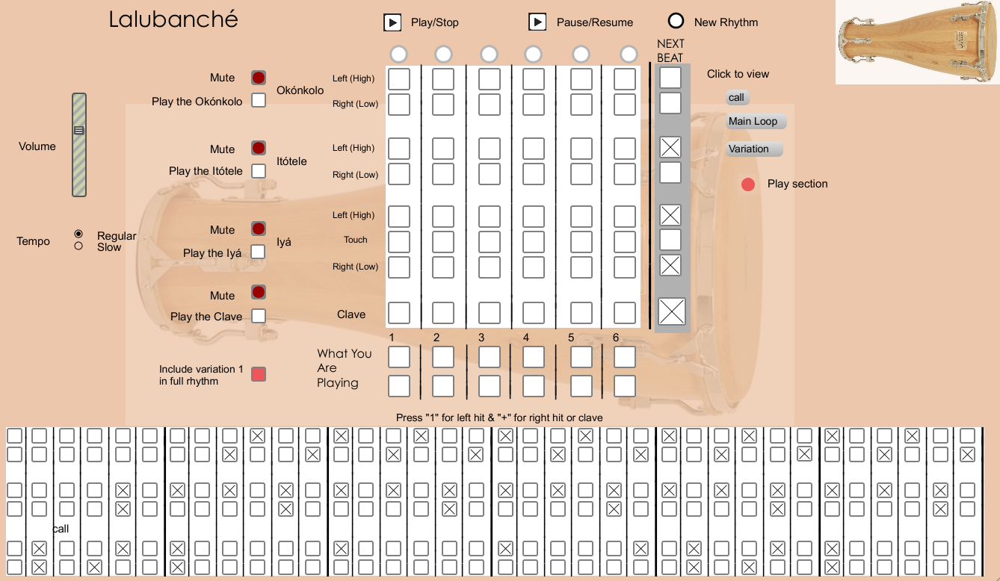
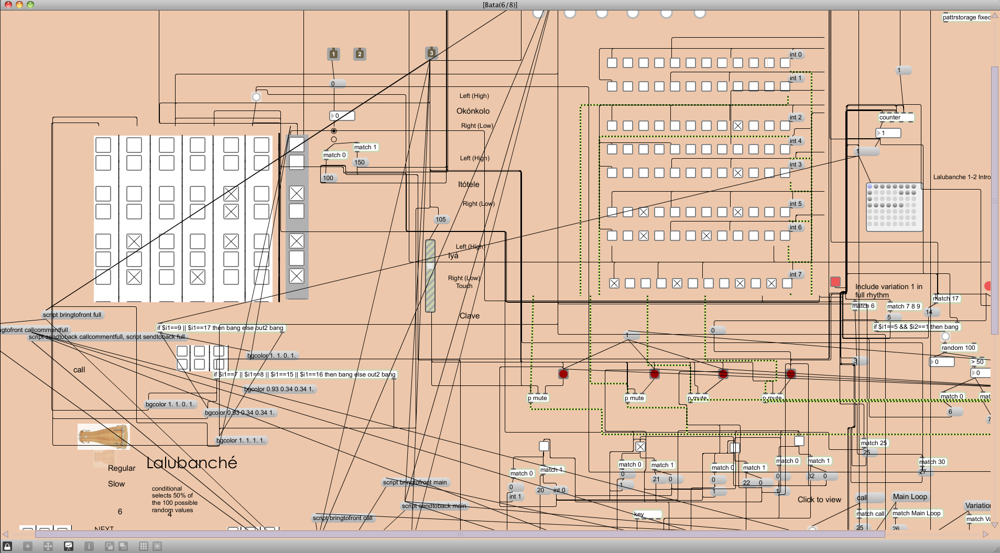

Afro-Latin Drumming Educational Software


This project was started in the Summer of 2013. The software aims to allow Bowdoin College students, who are taking Afro-Latin Ensemble, to learn songs and rhythms outside of class using library or personal computers. This is an important goal as many of the instruments used in this ensemble are not common or easily available. Working closely with Professor Michael Birenbaum-Quintero, we designed an interface that we will be testing with students who take Afro-Latin Ensemble in the Fall of 2014. The software was written by me using JavaScript and Max MSP. For more information, click here.